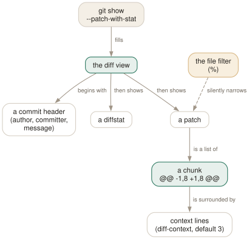

Day 04
Reading diffs
Context, chunks, and the filter you did not know was on.
By the end of today you can
- read the diff view's header and know which part came from git show and which from tig
- widen and narrow the context, and jump chunk to chunk, without scrolling
- recognise when the diff you are looking at has been silently filtered, and turn the filter off
The diff view is git show, dressed
Everything in the diff view came out of git show, which tig always runs with --patch-with-stat. What tig adds is colour, navigation and three controls — context, chunk-hopping and a file filter — that turn reading a patch from scrolling into aiming.
A commit in the diff view, top to bottom:
commit 0b12e18ae519b2391fb2d91b008b7c30d1954fe6
Refs: <v1.0>
Author: Ada Lovelace <dev@example.com>
AuthorDate: Sun Mar 1 10:00:00 2026 +0100
Commit: Ada Lovelace <dev@example.com>
CommitDate: Sun Mar 1 10:00:00 2026 +0100
Initial import
---
README | 1 +
src/main.c | 1 +
2 files changed, 2 insertions(+)
diff --git a/README b/README
new file mode 100644
index 0000000..1d51d01
--- /dev/null
+++ b/README
@@ -0,0 +1 @@
+Demo project
Note Author and Commit as separate lines — tig asks for a format that distinguishes them, so a rebased or cherry-picked commit tells you both who wrote it and who moved it. The Refs: line lists any branches or tags pointing here.

Context is a dial, not a setting
A chunk shows three unchanged lines either side of the change. That is diff-context, it defaults to 3, and in the diff view it is live:
- ]
- One more line of context, everywhere in the patch at once.
- [
- One fewer.
This matters more than it sounds. Three lines is rarely enough to tell whether an edit is inside the function you think it is inside. Pressing ] four or five times usually answers that without leaving the view, and it is much faster than opening the file.
Hopping chunks, and the search it quietly performs
@ jumps to the next chunk header. In a commit touching a dozen files it is the difference between reviewing and scrolling.
The same trick generalises. tigrc(5) suggests bind stage D :/^diff --(git|cc) to step file by file, and bind stage 2 :?^@@ to step backwards. You will write your own on Day 12.
The filter that shows nothing of itself
This is the one that costs people an afternoon. If you started tig with a path — tig -- src/parser.c — or descended into a single file through the tree view, then the diff view is filtered to that file. A commit that changed six files shows you one.
Nothing on screen says so. The title window looks normal, the diffstat shows only the filtered file, and the patch looks complete because it is a complete patch for that file.
- %
- Toggle
file-filter: show the whole commit rather than the path you arrived by. - ^
- Toggle
rev-filter: the equivalent for revision limits in the main view.
Whitespace, words, and intra-line changes
Three more controls, each for a diff that is technically correct and humanly unreadable:
- W /
ignore-space - Whitespace-insensitive diffing. The setting takes
no(default),all,someorat-eol. Turns a reindentation commit back into the two lines that actually changed. word-diff- Word-level rather than line-level. Off by default;
tig --word-diff=plainfor one session. Invaluable for prose and for long lines with one changed token. diff-highlight- Runs git's
diff-highlighthelper to mark what changed within a modified line. Off by default; set totrueor to the path of the script.
Today's habit
Next time you review a change, resist scrolling. Use @ to move chunk to chunk, ] when you cannot tell where you are, and % the moment a diff seems too short. Those three keys are most of code review.
Tomorrow: finding a commit you cannot see, by search and by name.
New vocabulary
Keys
| Key | Does |
|---|---|
| ] | Increase the diff context by one line. |
| [ | Decrease the diff context by one line. |
| @ | Jump to the next chunk header. Implemented as a search — see today's gotcha. |
| % | Toggle the file filter: show the whole commit, not just the file you came from. |
| W | Toggle whitespace-insensitive diffing. |
| $ | Highlight commit-title text past the conventional width. |
Commands
| Command | Does |
|---|---|
tig show <rev> | Open a commit directly in the diff view. |
tig --word-diff=plain | Word-level rather than line-level diffing. |
Options
| Option | Does |
|---|---|
diff-context | Context lines around each change. Default 3. |
diff-options | Extra options for the diff view's git show. |
ignore-space | Whitespace handling: no (default), all, some, at-eol. |
diff-highlight | Run git's diff-highlight to mark intra-line changes. Off by default. |
diff-indicator | Show the leading +/- signs. Default yes. |
Drillsdo these in a real terminal, today
Self-check
Answer out loud first, then unfold.
You are reviewing a commit that changed six files, but the diff view shows only one of them. Nothing is obviously wrong. What happened?
You arrived with a path filter in force. If tig was started as tig -- src/parser.c, or you descended from the tree view into a single file, the diff view inherits that limit and shows the part of the commit that touches it.
% toggles file-filter and gives you the whole commit back. This is the most common “tig is lying to me” moment, and it is the one filter that leaves no visible mark on the screen.
You press @ to step through chunks, then later press n expecting to continue an earlier search, and land on a chunk header instead. Why?
Because @ is not a dedicated action. It is bound to :/^@@ — an ordinary forward search for the regexp ^@@. Running it replaces whatever search pattern you had, so n afterwards repeats the chunk search.
This is a fair trade for the reader: it means chunk-hopping needs no special machinery, and you could have written the binding yourself. It also means that on Day 12 you can bind :/^diff --(git|cc) to step file by file instead.
Two people look at the same commit. One sees a three-line-context diff, the other sees twenty lines of context, and neither has a ~/.tigrc. How?
One of them pressed ] seventeen times. diff-context defaults to 3 and ] / [ adjust it by one, live, for the session.
There is a second possibility worth knowing: TIG_DIFF_OPTS in the environment. The precedence runs command line, then diff-options in the config, then TIG_DIFF_OPTS — so an export in somebody's shell profile quietly wins over nothing at all and loses to everything else.
Why does the diff view show Author and AuthorDate and Commit and CommitDate when git show normally shows only one author line?
Because tig asks for them. The diff view runs git show with --patch-with-stat always, and a pretty format that separates the author from the committer.
The two differ whenever a commit has been rebased, cherry-picked or applied from a patch — the author is who wrote it, the committer is who put it here and when. Seeing both by default is one of the quiet reasons tig is better than git show for archaeology.
Cheat sheet
The diff view in nine lines. The last two are the ones people lose time to.
] [ diff context, one line at a time (diff-context, default 3)
@ next chunk header — really a search for ^@@
n ... so this now repeats the CHUNK search, not yours
% file-filter: show the whole commit, not just the path you came by
^ rev-filter: the same, for revision limits
W ignore-space — but see below
$ highlight over-long commit titles
e open this file in $EDITOR at this line
# W on (all/some/at-eol) can make chunk staging FAIL tomorrow
Everything through Day 04
Keys
| Key | Does |
|---|---|
| m | Open the main view — the one-line-per-commit list. |
| d | Open the diff view for the selected commit. |
| s | Open the status view: the working tree. S does the same. |
| h | Open the help view: every binding that is live right now. |
| q | Close this view and fall back to the one underneath. Quits if it is the last. |
| Q | Quit immediately, however deep the stack. |
| R | Reload the current view by re-running its git command. |
| v | Show the version — and prove which build you are on. |
| z | Stop all background loading. For when you opened a 200,000-commit history. |
| D | Cycle the date column: default, relative, compact, custom, hidden. |
| A | Cycle the author column: full, abbreviated, email, user, hidden. |
| X | Show or hide the abbreviated commit ID column. |
| G | Cycle the graph in the main view: v2, v1, off. |
| F | In the main view, show or hide the ref labels. |
| # | Show or hide line numbers. |
| ~ | Switch the line graphics between ASCII and the drawing characters. |
| o | Open the option menu: the same toggles, with their current values. |
| jk | Move the cursor down and up. Arrow keys work too, with a caveat on Day 3. |
| Enter | Open the selected line. From the main view, splits and shows the diff. |
| Tab | Move focus to the other view in a split. |
| UpDown | Move to the previous/next entry — in the parent view, even from the child. |
| JK | Same as the arrow keys: next and previous entry. |
| O | Maximise the focused view to fill the display. |
| < | Go back to the previous view state. |
| , | Move to the parent: the parent directory, or the parent commit. |
| Space- | Page down and page up. |
| C-dC-u | Half a page down and up. |
| ] | Increase the diff context by one line. |
| [ | Decrease the diff context by one line. |
| @ | Jump to the next chunk header. Implemented as a search — see today's gotcha. |
| % | Toggle the file filter: show the whole commit, not just the file you came from. |
| W | Toggle whitespace-insensitive diffing. |
| $ | Highlight commit-title text past the conventional width. |
Commands
| Command | Does |
|---|---|
tig | Open the main view for the current branch. |
tig status | Start in the status view instead. |
tig -C <path> | Run as if started in path. |
tig -v | Print the version and exit. Also reveals the optional features built in. |
tig show <rev> | Open a commit directly in the diff view. |
tig --word-diff=plain | Word-level rather than line-level diffing. |
Options
| Option | Does |
|---|---|
show-changes | Whether the working-tree rows appear at all. Default yes. |
show-untracked | Whether the untracked row appears. Default yes. |
reference-format | How refs are wrapped. Default [branch] {remote} <tag> ~replace~. |
split-view-height | Height of the bottom view in a stacked split. Default 67%. |
split-view-width | Width of the right-hand view in a side-by-side split. Default 50%. |
vertical-split | Stacked or side by side. Default auto. |
focus-child | Whether opening a child view moves the focus into it. Default yes. |
diff-context | Context lines around each change. Default 3. |
diff-options | Extra options for the diff view's git show. |
ignore-space | Whitespace handling: no (default), all, some, at-eol. |
diff-highlight | Run git's diff-highlight to mark intra-line changes. Off by default. |
diff-indicator | Show the leading +/- signs. Default yes. |